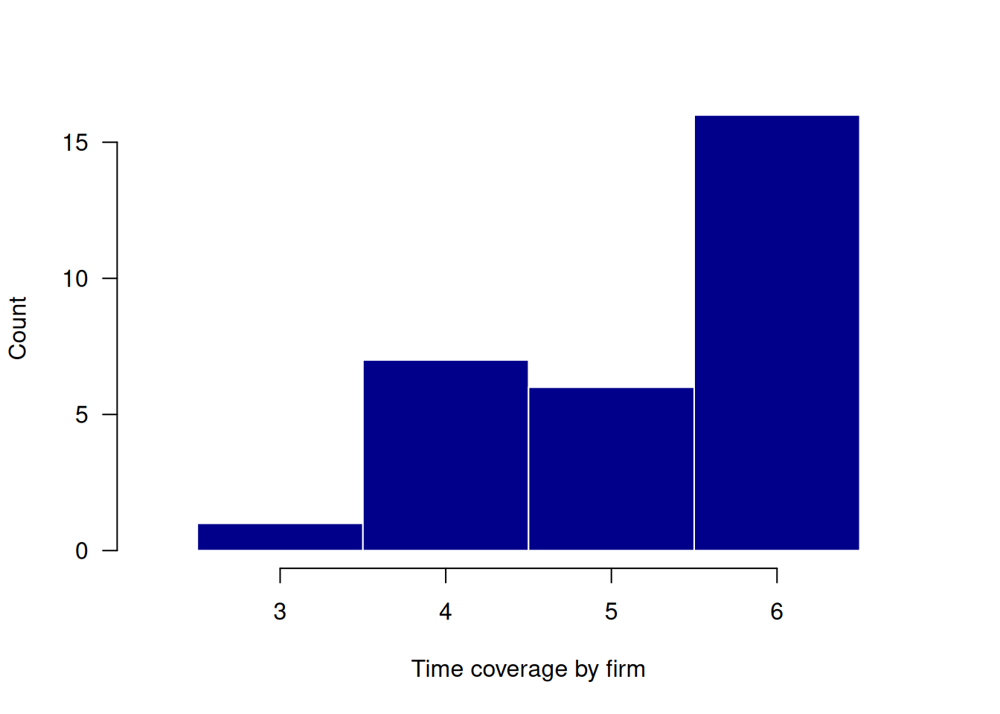
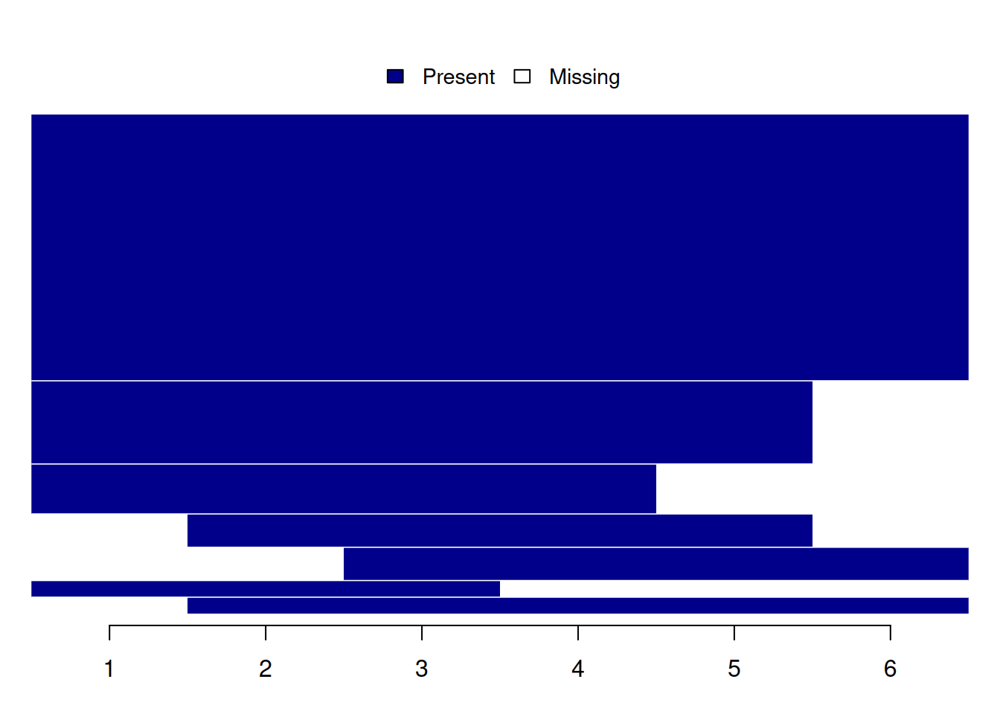
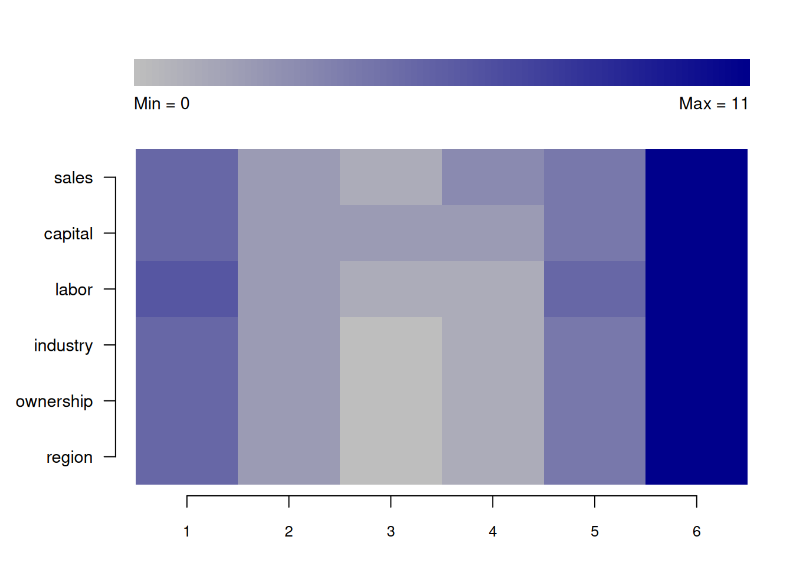
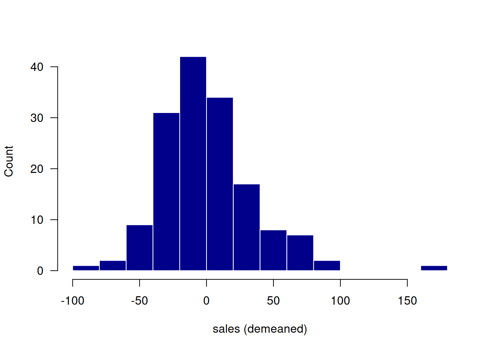
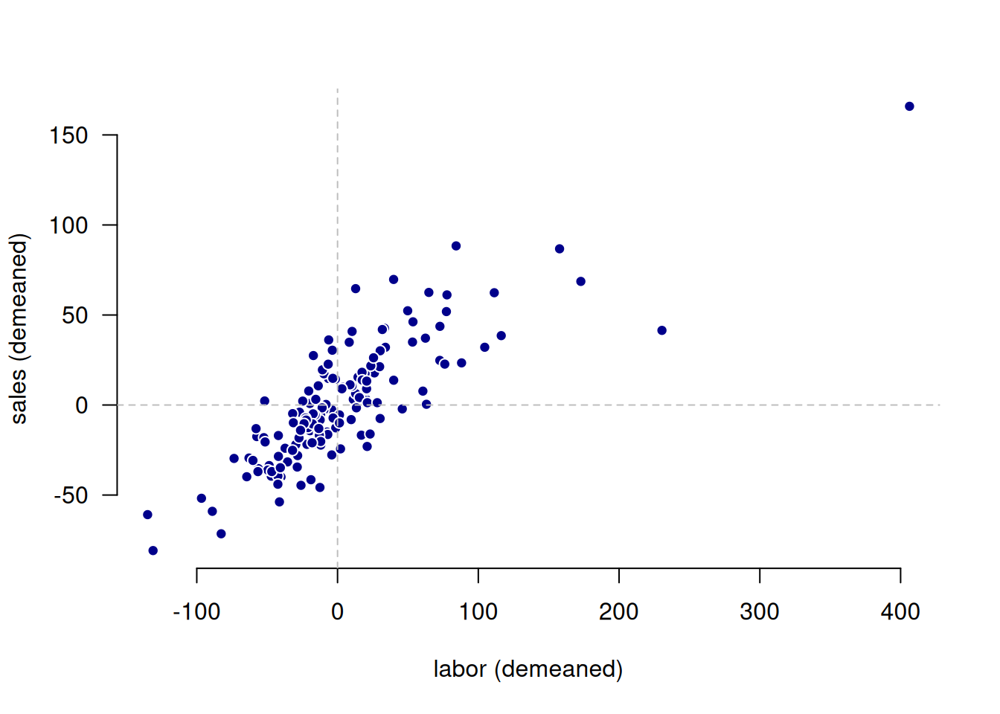

library(paneldesc)3 Basic example
Below is an example showing the basic usage of all the package’s functions.
3.1 Set up
Import the package.
3.2 Data import
Import the built-in dataset with simulated unbalanced panel data.
data(production)3.3 Panel data structure analysis
The first group of functions is designed to analyze the structure of the panel.
To begin with, you can look at the basic characteristics of the panel: the number of entities, the number of periods, the number of rows, and the number of variables.
describe_dimensions(production, index = c("firm", "year"))| rows | entities | periods | variables |
|---|---|---|---|
| 180 | 30 | 6 | 6 |
To begin analyzing the balance of the panel, you can look at the representation of entities by period.
describe_periods(production, index = c("firm", "year"))| year | count | share |
|---|---|---|
| 1 | 25 | 0.833 |
| 2 | 28 | 0.933 |
| 3 | 30 | 1.000 |
| 4 | 29 | 0.967 |
| 5 | 26 | 0.867 |
| 6 | 19 | 0.633 |
For a more detailed analysis of the panel balance, you can look at the distribution of the number of entities by periods and the number of periods by entities.
describe_balance(production, index = c("firm", "year"))| dimension | mean | std | min | max |
|---|---|---|---|---|
| entities | 26.167 | 3.971 | 19 | 30 |
| periods | 5.233 | 0.935 | 3 | 6 |
You can also visualize the distribution of the number of periods across entities.
plot_periods(production, index = c("firm", "year"))
In addition, the main patterns of entities participation in the panel can be displayed in a table or graph.
describe_patterns(production, index = c("firm", "year"))| pattern | 1 | 2 | 3 | 4 | 5 | 6 | count | share |
|---|---|---|---|---|---|---|---|---|
| 1 | 1 | 1 | 1 | 1 | 1 | 1 | 16 | 0.533 |
| 2 | 1 | 1 | 1 | 1 | 1 | 0 | 5 | 0.167 |
| 3 | 1 | 1 | 1 | 1 | 0 | 0 | 3 | 0.100 |
| 4 | 0 | 0 | 1 | 1 | 1 | 1 | 2 | 0.067 |
| 5 | 0 | 1 | 1 | 1 | 1 | 0 | 2 | 0.067 |
| 6 | 0 | 1 | 1 | 1 | 1 | 1 | 1 | 0.033 |
| 7 | 1 | 1 | 1 | 0 | 0 | 0 | 1 | 0.033 |
plot_patterns(production, index = c("firm", "year"))
3.4 Missing values analysis
The second group of functions is aimed at analyzing missing values, taking into account the nature of panel data.
You can create a heatmap showing the number of missing values for each variable across all time periods.
plot_missing(production, index = c("firm", "year"))Analyzing all variables: sales, capital, labor, industry, ownership, region
Also, you can output the table with brief summary statistics on missing values.
summarize_missing(production, index = c("firm", "year"))Analyzing all variables: sales, capital, labor, industry, ownership, region| variable | na_count | na_share | entities | periods |
|---|---|---|---|---|
| sales | 26 | 0.144 | 15 | 6 |
| capital | 26 | 0.144 | 17 | 6 |
| labor | 26 | 0.144 | 15 | 6 |
| industry | 23 | 0.128 | 14 | 5 |
| ownership | 23 | 0.128 | 14 | 5 |
| region | 23 | 0.128 | 14 | 5 |
In addition, you can compare missing values statistics across various entities.
describe_incomplete(production, index = "firm")| firm | na_count | variables |
|---|---|---|
| 23 | 18 | 6 |
| 6 | 13 | 6 |
| 7 | 13 | 6 |
| 1 | 12 | 6 |
| 2 | 12 | 6 |
| 12 | 12 | 6 |
| 21 | 12 | 6 |
| 26 | 12 | 6 |
| 25 | 7 | 6 |
| 30 | 7 | 6 |
| 4 | 6 | 6 |
| 13 | 6 | 6 |
| 17 | 6 | 6 |
| 29 | 6 | 6 |
| 14 | 2 | 2 |
| 10 | 1 | 1 |
| 22 | 1 | 1 |
| 27 | 1 | 1 |
3.5 Numeric variables analysis
The third group of functions is aimed at analyzing numeric variables, taking into account the nature of panel data.
If you need to, you can output a table with simple descriptive statistics.
summarize_numeric(production)Analyzing all numeric variables: firm, year, sales, capital, labor| variable | count | mean | std | min | max |
|---|---|---|---|---|---|
| firm | 180 | 15.500 | 8.680 | 1.000 | 30.000 |
| year | 180 | 3.500 | 1.713 | 1.000 | 6.000 |
| sales | 154 | 68.402 | 45.025 | 11.999 | 292.850 |
| capital | 154 | 33.152 | 32.044 | 2.030 | 160.085 |
| labor | 154 | 76.883 | 74.150 | 5.972 | 579.024 |
Descriptive statistics can be grouped by some variable, which does not necessarily have to be a panel identifier.
summarize_numeric(production, group = "year")Analyzing all numeric variables: firm, sales, capital, labor| year | variable | count | mean | std | min | max |
|---|---|---|---|---|---|---|
| 1 | firm | 30 | 15.500 | 8.803 | 1.000 | 30.000 |
| 1 | sales | 25 | 72.304 | 43.040 | 11.999 | 192.591 |
| 1 | capital | 25 | 40.154 | 39.004 | 3.206 | 148.942 |
| 1 | labor | 24 | 74.349 | 69.766 | 18.414 | 333.377 |
| 2 | firm | 30 | 15.500 | 8.803 | 1.000 | 30.000 |
| 2 | sales | 28 | 67.557 | 35.056 | 20.375 | 150.742 |
| 2 | capital | 28 | 30.210 | 30.596 | 5.032 | 122.332 |
| 2 | labor | 28 | 81.758 | 66.571 | 17.666 | 327.581 |
| 3 | firm | 30 | 15.500 | 8.803 | 1.000 | 30.000 |
| 3 | sales | 29 | 72.089 | 64.525 | 17.320 | 292.850 |
| 3 | capital | 28 | 30.111 | 30.372 | 2.030 | 121.740 |
| 3 | labor | 29 | 82.256 | 106.869 | 8.172 | 579.024 |
| 4 | firm | 30 | 15.500 | 8.803 | 1.000 | 30.000 |
| 4 | sales | 27 | 56.859 | 31.707 | 12.000 | 136.687 |
| 4 | capital | 28 | 34.889 | 32.046 | 7.146 | 148.994 |
| 4 | labor | 29 | 55.533 | 46.448 | 5.972 | 207.572 |
| 5 | firm | 30 | 15.500 | 8.803 | 1.000 | 30.000 |
| 5 | sales | 26 | 62.159 | 41.237 | 19.773 | 189.069 |
| 5 | capital | 26 | 28.076 | 21.871 | 4.637 | 78.244 |
| 5 | labor | 25 | 74.056 | 71.255 | 15.879 | 266.829 |
| 6 | firm | 30 | 15.500 | 8.803 | 1.000 | 30.000 |
| 6 | sales | 19 | 83.835 | 45.564 | 25.986 | 191.585 |
| 6 | capital | 19 | 37.145 | 39.400 | 3.690 | 160.085 |
| 6 | labor | 19 | 101.003 | 67.261 | 18.669 | 259.851 |
Heterogeneity between different groups can also be visualized.
plot_heterogeneity(production, select = "sales", group = "year")
For more detailed heterogeneity analysis, numeric variables can be decomposed into between and within components.
decompose_numeric(production, index = "firm")Analyzing all numeric variables: year, sales, capital, labor| variable | dimension | mean | std | min | max | count |
|---|---|---|---|---|---|---|
| year | overall | 3.500 | 1.713 | 1.000 | 6.000 | 180.000 |
| year | between | NA | 0.000 | 3.500 | 3.500 | 30.000 |
| year | within | NA | 1.713 | 1.000 | 6.000 | 6.000 |
| sales | overall | 68.402 | 45.025 | 11.999 | 292.850 | 154.000 |
| sales | between | NA | 29.060 | 34.263 | 166.364 | 30.000 |
| sales | within | NA | 34.127 | -12.444 | 234.297 | 5.133 |
| capital | overall | 33.152 | 32.044 | 2.030 | 160.085 | 154.000 |
| capital | between | NA | 17.414 | 9.019 | 74.225 | 30.000 |
| capital | within | NA | 27.072 | -25.567 | 149.329 | 5.133 |
| labor | overall | 76.883 | 74.150 | 5.972 | 579.024 | 154.000 |
| labor | between | NA | 41.068 | 31.021 | 190.645 | 30.000 |
| labor | within | NA | 61.202 | -58.040 | 483.217 | 5.133 |
Sometimes it can be helpful to analyze demeaned versions of variables.
plot_demeaned(production, select = "sales", group = "firm")
plot_demeaned(production, select = c("labor", "sales"), group = "firm")
3.6 Factor variables analysis
The last group of functions is aimed at analyzing factor (categorical) variables, taking into account the nature of panel data.
Factor variables can be decomposed into between and within components.
decompose_factor(production, index = "firm")Analyzing all factor variables: industry, ownership, region| variable | category | count_overall | share_overall | count_between | share_between | share_within |
|---|---|---|---|---|---|---|
| industry | Industry 1 | 63 | 0.401 | 13 | 0.433 | 0.918 |
| industry | Industry 2 | 45 | 0.287 | 11 | 0.367 | 0.809 |
| industry | Industry 3 | 49 | 0.312 | 10 | 0.333 | 0.917 |
| ownership | private | 80 | 0.510 | 17 | 0.567 | 0.894 |
| ownership | public | 36 | 0.229 | 9 | 0.300 | 0.787 |
| ownership | mixed | 41 | 0.261 | 10 | 0.333 | 0.772 |
| region | west | 38 | 0.242 | 7 | 0.233 | 1.000 |
| region | east | 40 | 0.255 | 8 | 0.267 | 1.000 |
| region | north | 36 | 0.229 | 7 | 0.233 | 1.000 |
| region | south | 43 | 0.274 | 8 | 0.267 | 1.000 |
One can also summarize transitions between states of a categorical (factor) variable.
summarize_transition(production, select = "industry", index = c("firm", "year"))23 rows with NA values in 'industry' removed.| from_to | Industry 1 | Industry 2 | Industry 3 |
|---|---|---|---|
| Industry 1 | 1.000 | 0.000 | 0.000 |
| Industry 2 | 0.054 | 0.919 | 0.027 |
| Industry 3 | 0.000 | 0.025 | 0.975 |